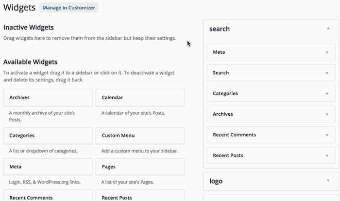
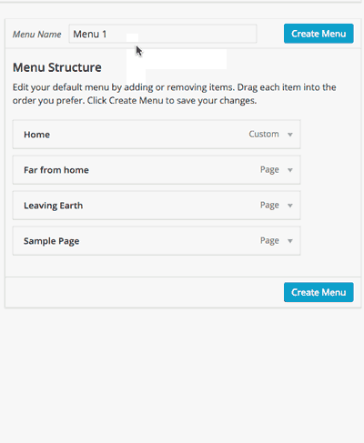
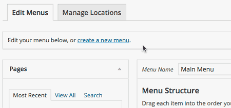
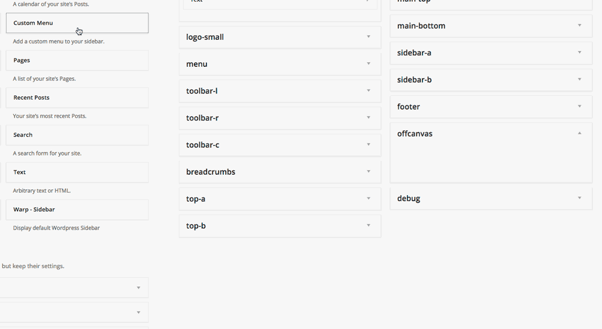

开始使用
学习如何使用Warp主题，如何用Warp开发主题，以及如何排除故障。
首先，你需要下载一份Warp主题。在 YOOtheme的下载页面中，下载 Master 2 免费主题。在下载的ZIP压缩包内，包含最新的Warp主题框架。
设置 WordPress 主题
本教程为你带来关于设置 Wordpress 和 Warp Framework 框架的简要介绍。
安装
安装Warp主题和安装其他主题一样遵循着标准的 Wordpress 安装流程。
- 从 WordPress 官方网站 下载 Wordpress 。
- 在服务器环境中安装 Wordpress 。
- 安装并启用主题。
了解更多信息，请查询官方WordPress 文档。
安装演示包 - demo package
演示包是一个完整的 Wordpress 安装包，包含了主题和演示数据来支撑布局，构建演示站点。如果你不想从头开始做起或者只是想看看所有东西加入之后是什么样子，这个演示包很有用哦。
排除故障
如果安装后，Wordpress没有正常运行或者出现了错误信息，你可能想要尝试手动安装主题。
- 在你的电脑上解压
.zip文件到一个文件夹目录中。 - 使用FTP上传主题文件到Web服务器上的
/wp-content/themes文件夹。 - 在Wordpress后台管理界面的 外观 > 主题 中，可以看到已经安装的主题。
- 点击 启用 激活刚刚安装的主题。
在安装问题页面，获取关于排除故障和解决PHP难题的进一步指导。
指定小工具的位置
如果你的Wordpress里已经有了内容，激活新的主题很可能让你的网站看起来怪怪的。究其原因，是小工具没有适配主题，而是被分配指定到了默认的位置。我们可以通过把这些小工具放置到主题中合适的位置来改变现状。
在Wordpress后台，访问 外观 » 小工具。一开始，你可能想要把大多数小工具拖拽到 未使用的小工具 里。在我们的例子中，这些小工具都被放在 Search 这个位置。我们将会移除除了实际的搜索小工具外的其他全部小工具。
查看你的站点，它看起来应该不那么凌乱了。现在，你可以将小工具分配到主题中的几个可用位置中了。在我们的在线演示网站，查看 Features » Layouts 获取关于主题中所有小工具位置的总览。
创建菜单
为了让你的主题知道主导航应该用什么内容来呈现，我们需要在Wordpress中创建一个菜单，并将其指定为主导航菜单。
首先，你需要新建一个菜单，并添加菜单条目。查看WordPress 文档了解详细信息。在下面的例子中，我们默认地添加所有的页面作为菜单的条目，然后移除了一个我们不想要的。
现在，我们只需要选择刚才创建的菜单作为网站的主导航。在页面上方点击 管理位置 选项卡，从下拉菜单中选择菜单。
小型设备上的菜单
默认的菜单会在小型设备上隐藏。你可以并且应该使用 抽屉（offcanvas） 位置，作为移动设备友好版的菜单。抽屉元素会被一枚菜单图标拨动。你还可以在这个位置放入其他小工具，但菜单应该是任何情况下被都应首先考虑的。
任意位置的菜单与菜单样式
你可以创建任意数量的菜单，并通过Wordpress后台的 小工具 中的 自定义菜单 小工具进行发布。你可以将这个小工具指定到你喜欢的任何位置。
有三种不同的菜单样式，大型下拉菜单（Mega dropdown menu）作为主菜单，手风琴菜单（Accordion menu）用在侧边栏，线性菜单（Line menu）用于工具栏或底部。Warp框架会根据菜单发布的位置进行自动地样式化。
创建LOGO
在Wordpress中设置LOGO真的很简单。只需创建一个文本小工具，并将它放在 Logo 位置上就行了。然后，在小工具中写入HTML代码就行。
例如，使用下面的代码：
<img src="wp-content/uploads/logo.png" width="200" height="50" alt="logo" />Warp 7 还提供了 小LOGO（logo-small） 位置，你可以在这里放入用于显示在小视口设备上的LOGO图片。
注意 如果LOGO图片没有在所有页面上都可见，只需要在路径前面添加一个斜杠就行，比如： /wp-content/uploads/logo.png 。